lisa s
 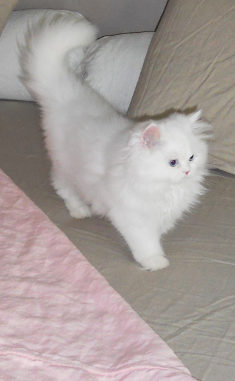
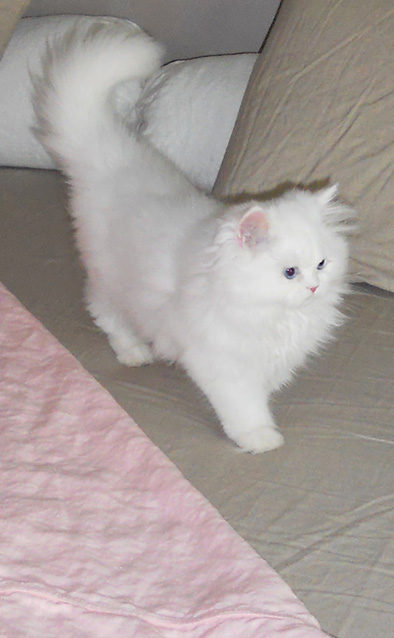
My family and I live in a small town in Southeast Alabama. We came across Rough Linen after I was diagnosed with a medical condition that is exacerbated by heat. I started researching fabrics that were cool to sleep on and discovered Rough Linen. After reading the fantastic reviews on Tricia's site I decided I would give linen a try. This was perhaps one of the best decisions I have ever made! Tricia's bedding is a dream to sleep on. It is indescribable the way my husband stays warm under the summer cover yet I stay cool. My night sweats are a thing of the past and my sleep is blessedly uninterrupted. I am forever grateful for Tricia's linen discovery and her willingness to share her craft with the world.
I am including some photos of Rough Linen's beautiful summer bed set in the most fantastic St. Barts pink color imaginable. I hope you enjoy the photos of our home as well. My husband and I are lovers of all things old and spend our free time buying and painting antique furniture. ~ lisa
 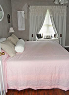
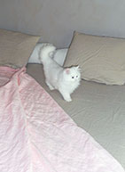
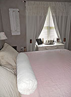
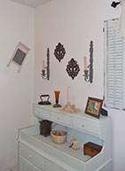
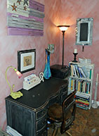
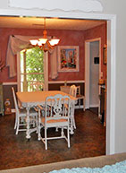
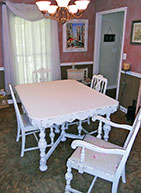
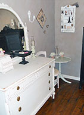
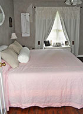
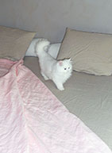
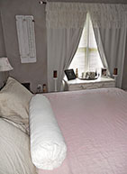
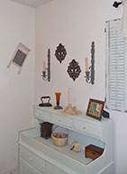
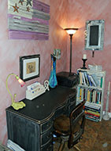
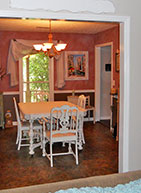
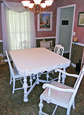
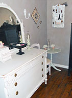